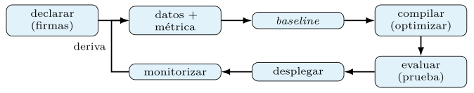
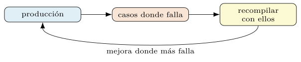
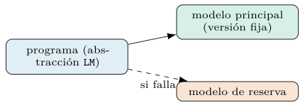
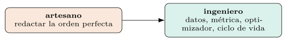
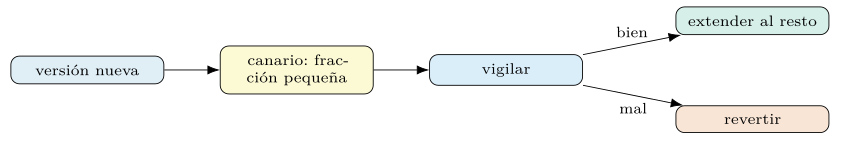
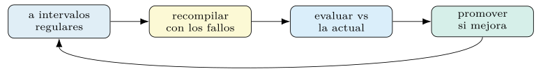
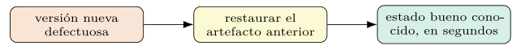
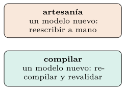
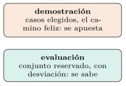
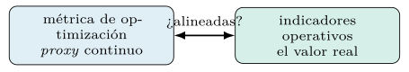

Capítulo 10. Cierre: práctica profesional con DSPy
Los capítulos anteriores construyeron las piezas: la teoría, la anatomía, la evaluación, los optimizadores, los flujos y el dominio diferencial de los binarios. Este cierra el libro con la mirada del profesional, que no busca el sistema más ingenioso sino el que funciona, se mantiene y resiste el contacto con la producción. Programar prompts solo paga si el resultado sobrevive al cambio de modelo, al escrutinio del coste y al paso del tiempo.
El capítulo recorre el ciclo completo —del baseline a producción—, la reoptimización ante el cambio, las restricciones de coste, latencia y consistencia, y las buenas prácticas que DSPy hereda de la ingeniería de software y del aprendizaje automático clásico. No introduce técnicas nuevas: ordena las ya vistas en una disciplina de trabajo.
El ciclo de vida: del baseline a producción
El ciclo profesional tiene una forma fija, repetida a lo largo del libro. Se declara el programa con firmas y módulos; se construye un conjunto de datos y una métrica honesta (capítulo 4); se mide un baseline sin optimizar; se compila con el optimizador adecuado al presupuesto (capítulos 5 y 6); se evalúa sobre la prueba reservada; y se despliega el programa compilado, guardando su estado. Ninguno de esos pasos es opcional: saltarse la medición lleva al sobreajuste, y saltarse el baseline impide saber si la optimización aportó algo.
La diferencia con la artesanía es que cada vuelta del ciclo es reproducible y auditable. El programa, los datos, la métrica y el estado compilado se versionan; una mejora se demuestra con cifras sobre datos reservados, no se afirma. Ese rigor convierte el desarrollo de sistemas de LM, hoy a menudo errático, en una disciplina de ingeniería con sus controles.

La figura 10.1 cierra el ciclo con un paso que la artesanía no tiene: la monitorización que, al detectar deriva, realimenta los datos y dispara una recompilación. El sistema no se entrega y se olvida; se opera, se vigila y se reajusta, y ese bucle de mantenimiento separa una demostración de un producto.
Construir el conjunto de datos.
El conjunto de datos es el cimiento de todo el ciclo, y construirlo bien decide más que la elección del optimizador. Tres conjuntos cumplen papeles distintos (capítulo 5): el de entrenamiento alimenta el arranque de demostraciones; el de validación guía la selección de candidatos; el de prueba, reservado e intocable, da la cifra final. Mezclar sus papeles —elegir el modelo mirando la prueba— invalida la medición, y es el error que arruina más proyectos.
La recolección y el etiquetado son trabajo, no un trámite. Los ejemplos deben representar la distribución real de producción —no los casos fáciles que vienen a la mano—, cubrir las clases minoritarias que importan (capítulo 4) y estar libres de duplicados que contaminen las particiones. En seguridad, donde los datos son sensibles y escasos, esta construcción es especialmente delicada: un conjunto sesgado hacia lo benigno enseña un sistema ciego a la amenaza.
import dspy
# ejemplos con sus entradas marcadas; particion estricta y deduplicada
datos = [dspy.Example(mensaje=m, categoria=c).with_inputs("mensaje")
for m, c in corpus_etiquetado]
entreno, desarrollo, prueba = particionar(deduplicar(datos), 0.6, 0.2, 0.2)El tamaño necesario es más modesto de lo temido (capítulo 5): unas decenas a unos cientos de ejemplos bastan para arrancar y optimizar, porque DSPy no entrena pesos. El cuello de botella suele ser la validación —de ella sale la señal que elige—, de modo que, ante datos escasos, conviene gastarlos en validar antes que en entrenar. La calidad del conjunto, no su tamaño, es la que manda.
La métrica como contrato.
La métrica es la definición operativa de «funciona», y en producción se convierte en un contrato: el sistema perseguirá exactamente cuanto la métrica premia (capítulo 6). Por eso elegirla es una decisión de producto, no un detalle técnico. Una métrica que mide la exactitud global sobre datos desequilibrados (capítulo 4) optimiza un sistema que ignora la clase rara; una que pondera el coste de cada error según su impacto real alinea la optimización con lo verdaderamente importante para el negocio.
El profesional escribe la métrica con la misma seriedad que el código. La valida —¿correlaciona con el juicio humano cuando hay un juez de modelo (capítulo 4)?—, la documenta —¿qué premia, qué penaliza?— y la versiona, porque cambiarla cambia el sistema. Una métrica mal pensada produce un sistema que puntúa alto y decepciona en producción, el fallo más frustrante porque todo parecía correcto sobre el papel.
En contextos de seguridad, la métrica incorpora además los costes asimétricos y los guardarraíles (capítulos 6 y 8): penalizar el falso negativo según el riesgo que deja pasar, el falso positivo según la fatiga que genera, y el incumplimiento de una restricción de seguridad como un fallo grave. La métrica deja de medir solo la calidad y pasa a codificar la política de la organización, que el optimizador hará cumplir.
Versionar el programa compilado.
El producto de una compilación —los prompts ajustados, las demostraciones seleccionadas, la configuración— es un artefacto que costó dinero y que define la conducta del sistema. Tratarlo como tal exige versionarlo, no regenerarlo en cada despliegue (capítulos 5 y 6). DSPy serializa ese estado a un fichero que se guarda junto al código, y se carga en producción sin repetir el gasto de la optimización.
compilado.save("artefactos/triaje_v3.json") # prompts + demostraciones
# en produccion: cargar el estado, sin recompilar
prod = MiPrograma()
prod.load("artefactos/triaje_v3.json")Versionar el artefacto cierra el círculo de la reproducibilidad (sección 10.4): el mismo código más el mismo estado compilado más el mismo modelo producen la misma conducta. Y permite el control de cambios que la ingeniería exige: comparar dos versiones del prompt compilado, revertir a la anterior si una regresa, y auditar qué cambió entre dos despliegues. El prompt entra así en el mismo régimen de gobernanza que el código.
La práctica completa versiona los cuatro elementos juntos: el código del programa, el conjunto de datos, la métrica y el estado compilado, atados a la versión del modelo con que se produjeron. Solo ese conjunto es reproducible; versionar el código pero no el estado compilado, o el estado pero no la versión del modelo, deja agujeros por los que la reproducibilidad se escapa. La disciplina es completa o no es.
Reoptimización ante cambios de modelo, coste o datos.
La ventaja decisiva de declarar la conducta y compilarla aflora cuando algo cambia. Si aparece un modelo mejor o más barato, no se reescriben prompts: se recompila el mismo programa contra el modelo nuevo, y el optimizador adapta las instrucciones y demostraciones a sus rarezas. Si la política de datos cambia —un dato que ya no puede salir de casa—, se sustituye el modelo por API por un SLM local (capítulo 8) y se recompila. La conducta declarada permanece; su realización se reajusta.
Esto cierra el bucle del capítulo 1: el sistema es autoajustable no solo una vez, sino cada vez que el entorno se mueve. Frente a una cadena artesanal, que al cambiar de modelo hay que rehacer a mano y volver a validar a ojo, el programa declarativo se reoptimiza con un comando y se vuelve a medir con el mismo aparato. La portabilidad deja de ser una promesa y se vuelve una operación rutinaria.
Servir, caché, escala y gestión del coste
Desplegar un programa de DSPy es servir un objeto que recibe entradas y devuelve salidas, detrás de la interfaz que la aplicación exija —una API, un trabajo por lotes, un servicio—. La pieza que conviene aislar es la configuración del modelo: la abstracción LM (capítulo 2) desacopla el programa del proveedor concreto, de modo que el mismo código corre con un modelo por API o con uno local sin cambiar (sección 10.1).
import dspy
# configurar el modelo de produccion una sola vez, al arranque del servicio
dspy.configure(lm=dspy.LM("openai/gpt-4o-mini", temperature=0.0, cache=True))
prod = MiPrograma()
prod.load("artefactos/triaje_v3.json") # estado compilado versionado
def manejar(peticion): # punto de entrada del servicio
return prod(mensaje=peticion.texto)La temperatura a cero y la caché activadas en el arranque dan consistencia y ahorro desde el primer momento (sección 10.2). El estado compilado se carga una vez, no por petición, y el programa queda listo para atender. Esta sencillez es deliberada: como la conducta vive en el artefacto versionado y no en código disperso, servir es cargar y llamar, sin la maraña de prompts incrustados que caracteriza a los sistemas artesanales.
El despliegue hereda, además, toda la disciplina del libro. El artefacto que se sirve es el que se midió sobre la prueba (sección 10.1); la versión del modelo está fijada (sección 10.1); y el servicio registra sus llamadas para la observabilidad (sección 10.3). Servir no es un acto aparte, sino el último paso de un ciclo que ya garantizó la calidad del artefacto desplegado.
La caché en producción.
La caché es la palanca de eficiencia más rentable de un sistema en producción. Memoizar las respuestas del modelo con una clave que combina el modelo, sus parámetros y el prompt exacto (capítulo 5) evita repagar llamadas idénticas, y en cargas reales —donde muchas consultas se repiten o comparten subcálculos— el ahorro es grande. DSPy la trae integrada; activarla es, a menudo, la primera optimización de coste antes que cualquier otra.
El matiz en producción es la política de la caché. Una caché en memoria acelera dentro de un proceso pero no se comparte entre instancias; una caché persistente —en disco o en un almacén externo— se comparte y sobrevive a los reinicios, a cambio de gestionarla. Para un servicio escalado a varias réplicas, una caché compartida multiplica el ahorro, porque una respuesta calculada por una réplica sirve a todas. La elección depende de la arquitectura del despliegue y del patrón de repetición de las consultas.
Hay una cautela de frescura. Una caché demasiado agresiva puede servir una respuesta obsoleta si el conocimiento subyacente cambió —un índice actualizado, un modelo nuevo (sección 10.1)—, de modo que la clave de la caché debe incluir cuanto de verdad determina la respuesta, y conviene invalidarla cuando ese contexto cambia. La caché acelera lo idéntico; asegurarse de que «lo idéntico» sigue siendo válido es responsabilidad del diseño.
Escala, concurrencia y límites de tasa.
Atender volumen exige concurrencia, y la concurrencia choca con los límites de tasa del proveedor del modelo. DSPy ejecuta peticiones en paralelo (capítulo 7), pero pasado cierto número de llamadas por segundo el proveedor las encola o las rechaza, y un sistema que ignora ese techo falla bajo carga. Ajustar la concurrencia al límite real, con reintentos y espera ante el rechazo, es parte del diseño de un servicio robusto.
# procesar un lote con concurrencia acotada al limite del proveedor
ejecutor = dspy.Parallel(num_threads=16, max_errors=5)
resultados = ejecutor(prod, lote_de_peticiones)Las palancas de escala se combinan. La caché (sección 10.2) reduce las llamadas reales; el paralelismo aprovecha el presupuesto de tasa disponible; los reintentos con retroceso exponencial absorben los rechazos transitorios; y un modelo local autoalojado (sección 10.4) elimina el límite de tasa externo a cambio de gestionar la infraestructura. La arquitectura sensata mezcla estas piezas según el volumen y el presupuesto.
El principio rector es dimensionar para la carga real, no para la imaginada. Medir el volumen esperado, el patrón de picos y la latencia tolerable (sección 10.2) precede al diseño de la concurrencia, igual que la medición precede a la optimización en todo el libro. Un servicio sobredimensionado desperdicia; uno infradimensionado cae bajo el primer pico, y solo la medición evita ambos.
La gestión del coste.
El coste de un sistema de LM es real y crece con el volumen, y gestionarlo es una responsabilidad profesional, no una ocurrencia tardía. Se descompone en dos partidas (capítulos 5 y 7): el coste de compilación —pagado una vez, al optimizar— y el de inferencia —pagado por cada consulta en producción—. El primero se amortiza; el segundo escala con el uso, y suele dominar la factura a largo plazo.
Las palancas para contenerlo recorren el libro. Un modelo más barato donde baste (capítulo 7), menos demostraciones si la calidad lo permite (capítulo 5), una caché agresiva (sección 10.2), una instrucción concisa que no malgaste contexto (capítulo 6), y la criba barata antes del análisis caro (capítulo 7). Cada una se evalúa por su efecto en la factura frente a su efecto en la calidad, que es el canje central de todo el capítulo.
La disciplina es estimar antes y vigilar después. Estimar la factura —llamadas esperadas por su coste medio— antes de desplegar evita sorpresas; vigilar el coste real en producción (sección 10.3) detecta una deriva del gasto —un agente que delibera de más, una caché que dejó de acertar— antes de que se vuelva un problema. El coste es un eje de diseño de primera clase, junto a la calidad y la latencia, y tratarlo como tal distingue al profesional del aficionado.
Coste, latencia y consistencia.
En producción, la calidad no es el único eje. El coste por llamada, multiplicado por el volumen, fija un presupuesto que el diseño respeta —un modelo más barato, menos demostraciones, una caché agresiva—. La latencia condiciona la experiencia: un flujo de varios pasos suma esperas, y a veces conviene un solo paso peor a varios mejores. La consistencia (capítulo 4) importa donde la misma entrada debe dar la misma salida —una decisión auditable—, y se logra con temperatura cero y caché.
Estas tres restricciones se negocian, no se ignoran. Un sistema que maximiza la calidad sin mirar el coste es tan poco profesional como uno barato que falla. La elección del modelo, del optimizador y del número de demostraciones es, en el fondo, la búsqueda de un punto en ese espacio de compromisos, y el frente de Pareto de GEPA (capítulo 6) lo hace explícito: no hay un óptimo único, sino una frontera de soluciones que equilibran los ejes de distinta manera. La tabla 10.1 resume los tres ejes.
| Eje | Se controla con |
|---|---|
| Coste | modelo más barato, menos demostraciones, caché |
| Latencia | menos pasos, paralelismo |
| Consistencia | temperatura cero y caché |
Operaciones: monitorización, deriva y errores
Desplegar no es el final, sino el comienzo de la operación, y operar exige monitorizar. Tres magnitudes se vigilan de continuo (sección 10.2): la calidad, contra una muestra etiquetada reciente; el coste, por consulta y agregado; y la latencia, en su distribución, no solo en su media —un percentil alto delata las peticiones lentas que la media oculta—. Un sistema sin estas señales es una caja negra que se descubre rota cuando un usuario se queja, demasiado tarde.
La vigilancia de la calidad es la más sutil, porque la verdad —la etiqueta correcta— no está disponible en producción. Se aproxima de varias formas: medir sobre una muestra que se etiqueta a posteriori, usar un juez de modelo (capítulo 4) como estimador continuo, o vigilar señales indirectas —la tasa de respuestas que fallan una validación (sección 10.3), la longitud anómala, la frecuencia de cada clase—. Ninguna sustituye a la etiqueta, pero juntas detectan una degradación antes de que se vuelva grave.
El propósito de monitorizar no es contemplar gráficas, sino actuar. Cada magnitud tiene un umbral cuya superación dispara una respuesta: una caída de calidad abre una investigación de deriva (sección 10.3); un repunte de coste, una revisión del gasto (sección 10.2); una latencia alta, un ajuste de la concurrencia (sección 10.2). La monitorización cierra el ciclo de vida (figura 10.1): es el sentido que detecta cuándo el sistema necesita volver al taller.
Detectar la deriva de distribución.
Un sistema compilado retrata el mundo tal como era cuando se midió, y el mundo cambia. La deriva de distribución —entradas que se apartan de las de entrenamiento— erosiona la calidad en silencio: el sistema sigue ejecutándose sin error, pero acierta cada vez menos porque las consultas ya no se parecen a las que optimizó. En seguridad la deriva es la norma, no la excepción (capítulos 5 y 8): aparecen amenazas nuevas, cambian los patrones, se renombran las categorías.
Detectarla exige vigilar tanto las entradas como las salidas. Un cambio en la distribución de las entradas —nuevos tipos de mensaje, vocabulario inédito— es deriva de datos; un cambio en la de las salidas —la proporción de clases que el sistema predice se desvía de la esperada— denota que algo se mueve. Comparar la distribución reciente con la de referencia, sobre las entradas y sobre las predicciones, señala la deriva antes de que la métrica de calidad se desplome.
La respuesta a la deriva es la recompilación con datos frescos (sección 10.1), reabriendo el ciclo (figura 10.1). Aquí la disciplina del libro paga su mayor dividendo: donde un sistema artesanal exigiría reescribir prompts a mano y revalidar a ojo, el declarativo se recompila con un comando sobre el corpus actualizado y se vuelve a medir con el mismo aparato. El mantenimiento ante la deriva deja de ser una crisis y se vuelve una rutina programada.
Observabilidad: trazas e historial.
Cuando algo falla en producción —y algo fallará—, depurarlo exige ver por dentro qué ocurrió. La observabilidad de un sistema de LM es poder inspeccionar, de una ejecución concreta, qué prompt recibió cada módulo, qué devolvió, qué herramientas se invocaron y con qué resultado (capítulo 7). DSPy expone el historial de las llamadas al modelo y se integra con sistemas de trazado que registran cada paso para examinarlo después.
pred = prod(mensaje="conexion saliente 2GB a IP externa")
dspy.inspect_history(n=1) # el ultimo prompt y respuesta, literales
# en produccion: registrar la traza de cada peticion para auditarla luegoSin esa visibilidad, un fallo es un misterio y su corrección, adivinación; con ella, la traza señala la causa —un pasaje mal recuperado, un razonamiento torcido, una herramienta que devolvió un error—. Inspeccionar la traza es, para la depuración de flujos, el equivalente del depurador para el código: la herramienta primaria, sin la cual se trabaja a ciegas. En producción, registrar las trazas de las peticiones —respetando la privacidad de los datos (sección 10.5)— las hace auditables a posteriori.
La observabilidad tiene, además, un valor que trasciende la depuración. Las trazas registradas son el material que alimenta la mejora: los casos de fallo que revelan se convierten en ejemplos para la siguiente compilación (sección 10.3), y el patrón de uso real informa qué optimizar. La traza no sirve solo para entender el pasado, sino para construir el futuro del sistema, y por eso registrarla es una inversión, no un coste.
El bucle de realimentación de producción.
El cierre del ciclo profesional es un bucle: los fallos de producción alimentan la siguiente mejora. Cada caso que el sistema resuelve mal —detectado por la monitorización (sección 10.3), corregido por un analista (capítulo 8), registrado en la traza (sección 10.3)— es un dato valioso: un ejemplo representativo de dónde el sistema flaquea, justo el más informativo para optimizar. Recogerlos sistemáticamente convierte la operación diaria en una fuente de datos de entrenamiento.
# los fallos corregidos en produccion se incorporan al conjunto
casos_fallo = recoger_correcciones(periodo="ultimo_mes")
entreno_v4 = entreno + casos_fallo # crece con los casos dificiles
# recompilar con el corpus enriquecido (seccion de reoptimizacion)Este bucle tiene una virtud profunda: el sistema mejora justo donde más falla, porque los casos que se recogen son los que se equivocó. A diferencia de recolectar datos al azar, recoger los fallos concentra el esfuerzo de etiquetado en la frontera de la competencia del sistema, que es donde un ejemplo más enseña más. La operación deja de ser solo un coste de mantenimiento y se vuelve el motor de la mejora continua.
Cerrar este bucle distingue un sistema vivo de uno que se degrada. Un sistema que no aprende de sus fallos repite los mismos, y la deriva (sección 10.3) lo erosiona sin remedio; uno que los recoge y recompila se adapta al mundo cambiante. La programación de prompts, con su ciclo de declarar, medir y recompilar, hace de ese bucle una operación rutinaria en lugar de una reescritura artesanal, y ahí reside buena parte de su valor a largo plazo. La figura 10.2 dibuja el bucle.

Manejo de errores y degradación elegante.
Un sistema en producción falla de formas que el desarrollo no anticipa: el proveedor del modelo no responde, una herramienta agota su tiempo, una salida no cumple el formato esperado (capítulo 7). Un sistema profesional los prevé y degrada con elegancia en lugar de caer: reintenta lo transitorio, valida lo dudoso, y dispone de un plan B para lo irresoluble en el momento.
def manejar(peticion):
try:
pred = prod(mensaje=peticion.texto)
validar_salida(pred) # rechaza salidas malformadas
return pred
except TimeoutError:
return respuesta_degradada(peticion) # plan B: regla o cola humana
except ValidacionError:
registrar_para_revision(peticion) # a revision humana, no se sirve
return NoneTres patrones cubren la mayoría de los casos. Los reintentos con retroceso absorben los fallos transitorios del proveedor (sección 10.2). La validación de la salida (capítulo 7) atrapa el formato roto o la cita inventada antes de servirla. Y la degradación —una respuesta más simple, una regla de reserva, una cola a un humano— mantiene el servicio en pie cuando el camino ideal no está disponible, en lugar de devolver un error al usuario.
El principio rector es no servir nunca una respuesta peor que ninguna. En seguridad, una salida malformada o alucinada que se sirve con confianza (capítulo 8) puede ser más dañina que una negativa honesta, y el sistema profesional prefiere reconocer que no puede responder a inventar una respuesta. La robustez no es un adorno: es la diferencia entre un prototipo que impresiona en la demostración y un sistema que aguanta el mundo real.
Buenas prácticas, pruebas y gestión de modelos
DSPy hereda dos tradiciones, y el profesional las honra. De la ingeniería de software: control de versiones de todo —código, datos, estado compilado—; pruebas que detecten una regresión antes de desplegarla; modularidad, para que un cambio no propague efectos imprevistos; y observabilidad, el historial y las trazas del capítulo 2. Del aprendizaje automático clásico: separación estricta de conjuntos, vigilancia del sobreajuste, honestidad estadística en el informe y reproducibilidad documentada —modelo, versión, semilla, fecha—.
# un test de regresion: la calidad no debe caer por debajo de un umbral medido
def test_no_regresion():
score = evaluar(cargar("salidas/triaje_mipro.json"))
if score < UMBRAL: # umbral fijado sobre datos reservados
raise AssertionError("regresion de calidad") # se valida con raiseLa síntesis de ambas tradiciones es la tesis del libro llevada a su consecuencia diaria: tratar el prompt como un artefacto de ingeniería —declarado, medido, versionado, optimizado— y no como un texto que se retoca. Quien adopta esa disciplina deja de depender de la suerte y de la intuición, y construye sistemas de LM que se sostienen.
Pruebas e integración continua.
Las pruebas son la red que atrapa una regresión antes de que llegue al usuario, y un sistema de LM admite varias clases. Las unitarias comprueban las piezas deterministas —que el adaptador serializa bien, que una herramienta valida sus argumentos (capítulo 7)—. Las de regresión miden la calidad del programa compilado contra un umbral fijado sobre datos reservados, y fallan si cae. Y las de integración ejercitan el flujo completo sobre casos representativos, incluidos los adversariales (capítulo 8).
La particularidad de probar un sistema de LM es su naturaleza estocástica: la misma entrada puede dar salidas distintas si la temperatura no es cero (sección 10.2). Por eso las pruebas de conducta se fijan con temperatura cero y semilla, y las de calidad se hacen sobre un conjunto, no sobre un ejemplo —se mide una métrica agregada con su tolerancia, no una igualdad exacta—. La prueba de regresión del prompt compilado se parece más a la evaluación de un modelo (capítulo 4) que a la aserción binaria del código clásico.
Integradas en una canalización de integración continua, estas pruebas convierten la mejora del sistema en un proceso controlado. Un cambio —en el código, en los datos, en el prompt compilado— dispara la recompilación y la evaluación automáticas, y solo se despliega si no hay regresión. Así, el desarrollo de sistemas de LM, hoy a menudo un ir y venir manual, adquiere los controles de la ingeniería de software madura: nada llega a producción sin pasar la red de pruebas. La tabla 10.2 recoge las tres clases.
| Prueba | Qué comprueba |
|---|---|
| Unitaria | las piezas deterministas (adaptador, herramientas) |
| Regresión | la calidad no cae bajo un umbral medido |
| Integración | el flujo completo, incluidos casos adversariales |
Gestión de modelos: selección, fijado y reserva.
El modelo es una dependencia del sistema, y gestionarlo como tal es práctica profesional. La selección elige el modelo que mejor equilibra calidad y coste para la tarea (capítulo 7), medido, no supuesto. El fijado ancla la versión exacta del modelo, porque un endpoint que cambia de versión sin aviso puede degradar un prompt antes afinado (capítulo 6) sin que el código cambie. Y la reserva prevé un modelo alternativo para cuando el principal no responde (sección 10.3).
# fijar la version y prever un modelo de reserva
principal = dspy.LM("openai/gpt-4o-2024-08-06", temperature=0.0) # version fija
reserva = dspy.LM("anthropic/claude-haiku-4-5", temperature=0.0)La abstracción LM (capítulo 2), apoyada en una capa que unifica decenas de proveedores (BerriAI 2024), hace barato cambiar de modelo: el mismo programa corre con uno u otro sin tocar su lógica. Esa indiferencia al proveedor es una ventaja estratégica —evita el amarre a un único vendedor— y operativa —permite enrutar a un modelo de reserva ante un fallo, o a uno más barato para tareas simples (capítulo 7)—. La figura 10.3 resume selección, fijado y reserva.

El cuidado a recordar es que cambiar de modelo no es gratis en calidad: un prompt optimizado para uno no se transfiere sin más a otro (capítulo 6), y conviene recompilar y revalidar tras el cambio (sección 10.1). La reserva sirve para no caer, pero la calidad con el modelo de reserva debe medirse, no presumirse; un sistema que degrada a un modelo nunca evaluado puede estar sirviendo, en la emergencia, respuestas peores de las que cree.
Autoalojar el modelo o consumirlo por API.
Una decisión de arquitectura con consecuencias es si el modelo se consume por API de un proveedor o se autoaloja. La API es cómoda —sin infraestructura, con acceso a los modelos más capaces— pero ata a un proveedor, su precio y su política, y envía los datos fuera. El autoalojamiento —un modelo abierto corriendo en infraestructura propia, con un servidor de inferencia como vLLM (Kwon et al. 2023)— da control, privacidad y un coste marginal predecible, a cambio de gestionar el despliegue y, a menudo, de una calidad algo menor.
En seguridad, el factor decisivo suele ser la privacidad (sección 10.5). Un binario sospechoso, un registro de incidentes o un fragmento de código propietario no siempre pueden salir de la organización, y entonces el autoalojamiento deja de ser una preferencia y se vuelve un requisito. La abstracción LM hace que esa elección no toque el programa: el mismo código compilado corre contra un modelo por API en desarrollo y contra uno local en producción (sección 10.1).
El canje se resuelve, como todo, midiendo. Se compara la calidad del modelo autoalojado —tras optimizar su prompt y, si hace falta, destilar (capítulo 8)— con la del modelo por API, y se sopesa frente a las exigencias de privacidad, coste y control. La optimización de DSPy inclina la balanza hacia lo posible: un modelo abierto bien compilado a menudo basta donde se temía necesitar uno cerrado, y esa diferencia puede decidir un despliegue autoalojado que de otro modo no rendiría.
Reproducibilidad y registro de experimentos.
La reproducibilidad es la propiedad que convierte un resultado en conocimiento fiable, y exige fijar cuanto varía. Una compilación es reproducible si, dados el mismo código, los mismos datos, la misma métrica, el mismo modelo y la misma semilla, produce el mismo artefacto (capítulos 5 y 6). Omitir cualquiera de esas piezas abre un agujero por el que la reproducibilidad se escapa, y en un campo que avanza deprisa —modelos nuevos cada pocos meses— esa disciplina permite saber si una mejora viene del método o de un componente actualizado.
El registro de experimentos sistematiza esa disciplina. Cada corrida de optimización anota su configuración —optimizador, presupuesto, semilla, versión del modelo— y su resultado —las métricas sobre la prueba—, de modo que las decisiones se toman comparando experimentos registrados, no recuerdos. Herramientas de seguimiento de experimentos, integrables con DSPy, automatizan ese registro y hacen el historial consultable: qué se probó, qué rindió, por qué se eligió la versión en producción.
Este rigor no es burocracia: es la frontera entre la ingeniería y la anécdota. Un equipo que registra sus experimentos puede reproducir un resultado de hace meses, entender por qué una versión superó a otra y revertir con confianza si una nueva regresa (sección 10.1). Sin ese registro, las mejoras son golpes de suerte irrepetibles, y el sistema se vuelve un artefacto que nadie se atreve a tocar por miedo a romper algo que no sabe explicar.
Gobernanza, privacidad y economía
Un sistema que toma decisiones con consecuencias —bloquear un binario, escalar un incidente, denegar un acceso— debe poder rendir cuentas. La gobernanza exige saber, de cada decisión, quién la tomó, sobre qué evidencia y con qué versión del sistema. La disciplina del libro lo facilita: el artefacto está versionado (sección 10.1), la decisión cita su procedencia (capítulo 8), y la traza registra cómo se llegó a ella (sección 10.3). La auditabilidad no se añade después; emana de hacer las cosas con método.
Esta trazabilidad responde a exigencias reales. Una decisión automática que afecta a personas o a sistemas críticos puede tener que justificarse ante un auditor, un regulador o un tribunal, y un sistema que solo emite etiquetas opacas no puede hacerlo. Uno que registra su versión, su entrada, su razonamiento y su evidencia sí, y convierte una caja negra en un proceso defendible. En seguridad, donde las decisiones disparan acciones de peso, esa defensa no es opcional.
La gobernanza incluye también el control de quién puede cambiar el sistema y cómo. Igual que el código pasa por revisión antes de fundirse, el prompt compilado y la métrica que lo gobierna (sección 10.1) entran en el mismo régimen de control de cambios: se revisan, se aprueban, se despliegan con trazabilidad y se revierten si regresan (sección 10.4). El prompt deja de ser un texto que cualquiera retoca y pasa a ser un artefacto gobernado, que es la consecuencia organizativa de la tesis del libro.
Privacidad y manejo de los datos.
Los datos de un sistema de seguridad son sensibles por naturaleza —registros de incidentes, binarios propietarios, información de la infraestructura—, y manejarlos con cuidado es una obligación, no una opción. La primera decisión es dónde se procesan: enviar un dato a una API externa lo saca de la organización, con las implicaciones de confidencialidad y cumplimiento que eso conlleva. Cuando el dato no puede salir, el autoalojamiento (sección 10.4) deja de ser una preferencia y se vuelve un requisito.
Más allá de dónde, importa qué se procesa y qué se conserva. Minimizar los datos —enviar al modelo solo lo necesario para la tarea, no el registro entero—, anonimizar lo posible, y fijar políticas de retención para las trazas (sección 10.3) son prácticas que reducen la superficie de riesgo. Una traza que registra un prompt con datos sensibles es, ella misma, un dato sensible, y conservarla sin control es crear un nuevo riesgo en nombre de la observabilidad.
La tensión entre observabilidad y privacidad se gestiona, no se ignora. Se registra lo suficiente para depurar y auditar (secciones 10.3 y 10.5), pero se protege —cifrado, acceso restringido, retención acotada— lo registrado. El profesional que opera un sistema de LM en seguridad asume que sus datos son un activo a proteger, y diseña el sistema para honrarlo, porque una fuga por la puerta de atrás de la observabilidad sería una ironía amarga en un sistema de defensa.
La economía de la optimización.
Optimizar cuesta, y conviene pensar ese coste como una inversión con su retorno. La compilación se paga una vez —las llamadas al modelo durante la búsqueda (capítulos 5 y 6)—, y el retorno se cobra en cada consulta de producción: más calidad, o el mismo nivel con un modelo más barato o un prompt más corto. El cálculo es el de cualquier inversión: la optimización compensa cuando su coste único se amortiza con el ahorro o la mejora acumulados sobre el volumen de inferencia.
De ahí salen reglas de decisión. Para un sistema de bajo volumen o vida corta —un prototipo, un análisis puntual—, una optimización ligera basta o ni siquiera compensa (capítulo 6); el coste de compilar no se amortizaría. Para un servicio de alto volumen y larga vida, una optimización intensa —y su mantenimiento ante la deriva (sección 10.3)— se paga con holgura, porque cada décima de mejora se multiplica por millones de consultas. El presupuesto de optimización se dimensiona, por tanto, según el volumen y la vida esperados del sistema.
Hay un ahorro indirecto que conviene contar: la optimización que permite usar un modelo más pequeño (capítulo 8). Un prompt bien compilado a menudo lleva a un modelo modesto a la calidad que se creía exclusiva de uno grande, y la diferencia de coste por consulta, multiplicada por el volumen, puede superar con creces el coste de la compilación. La economía de optimizar no es solo gastar para mejorar: es, muchas veces, gastar una vez para ahorrar sin descanso.
Anti-patrones y errores comunes.
Conviene nombrar los errores que más arruinan proyectos, porque reconocerlos es medio remedio. El primero es saltarse el baseline**: optimizar sin medir antes el programa sin optimizar, de modo que no se sabe si la mejora vino de la optimización o estaba ya ahí (sección 10.1). El segundo es contaminar la prueba: elegir el modelo o el prompt mirando el conjunto que debía quedar reservado, inflando una cifra que no generaliza (capítulo 4). Ambos producen sistemas que brillan en el desarrollo y decepcionan en producción.
Otros tres son igual de frecuentes. Optimizar una métrica equivocada (sección 10.1): el sistema persigue con diligencia un objetivo que no es el que importa, y acaba siendo bueno en lo indebido. Ignorar el coste y la latencia (sección 10.2): maximizar la calidad hasta volver el sistema inviable en producción. Y desplegar y olvidar: entregar el sistema sin monitorización (sección 10.3), dejándolo degradarse en silencio ante la deriva hasta que falla ruidosamente.
El hilo común de estos anti-patrones es saltarse la disciplina por prisa o por exceso de confianza. La tentación de omitir la medición, de mirar la prueba «solo una vez», de no escribir la métrica con cuidado, o de no montar la monitorización, es real, porque cada atajo ahorra trabajo hoy. Pero cada uno siembra un fallo que estalla mañana, en producción, donde es más caro arreglarlo. La disciplina del libro no es pedantería: es la suma de lecciones aprendidas de estos fracasos, y honrarla separa un sistema que dura de uno que se derrumba. La tabla 10.3 los cataloga.
| Anti-patrón | Consecuencia |
|---|---|
| Saltarse el baseline | no se sabe si la mejora vino de optimizar |
| Contaminar la prueba | una cifra que no generaliza |
| Optimizar la métrica equivocada | bueno en lo indebido |
| Ignorar coste y latencia | inviable en producción |
| Desplegar y olvidar | degradación silenciosa por deriva |
Un caso profesional, el cambio de rol y la lista de comprobación
Conviene cerrar reuniendo el capítulo en un caso. Un equipo de seguridad necesita un triaje automático de incidentes (capítulo 3). El ingeniero declara el programa con su firma, reúne y particiona un corpus etiquetado (sección 10.1), escribe una métrica que pondera el coste de cada error (sección 10.1), y mide un baseline sin optimizar. Con eso fija el punto de partida y sabe cuánto margen hay.
base = evaluar_en(triaje, prueba, f1_ponderado) # baseline medido
opt = dspy.MIPROv2(metric=f1_ponderado, auto="medium")
compilado = opt.compile(triaje, trainset=entreno, valset=desarrollo)
mejora = evaluar_en(compilado, prueba, f1_ponderado) - base # significativa?
compilado.save("artefactos/triaje_v1.json") # artefacto versionadoCompila con el optimizador adecuado a su presupuesto, comprueba que la mejora sobre el baseline es significativa (capítulo 4), y guarda el artefacto versionado. Lo despliega tras la abstracción LM (sección 10.2), con caché y temperatura cero, validación de salidas y un plan de degradación (sección 10.3). Y monta la monitorización (sección 10.3) que vigilará calidad, coste y latencia, con la recogida de fallos que alimentará la próxima versión (sección 10.3).
Meses después, la monitorización detecta una caída de calidad: han aparecido incidentes de un tipo nuevo (sección 10.3). El ingeniero no reescribe prompts a mano: añade los casos recogidos al corpus, recompila con un comando (sección 10.1), comprueba que no hay regresión (sección 10.4) y despliega la versión nueva. El sistema se ha adaptado al mundo cambiante con una operación rutinaria, y ese —no el ingenio de un prompt concreto— es el valor que el libro ha defendido capítulo a capítulo.
El cambio de rol: del artesano al ingeniero.
Adoptar esta disciplina cambia el oficio de quien construye sistemas de LM. El ingeniero de prompts** de la primera hora dedicaba su pericia a redactar la orden perfecta, una habilidad artesanal, subjetiva y difícil de transmitir. El profesional que programa prompts dedica la suya a otra cosa: a construir buenos conjuntos de datos, a escribir métricas fieles, a elegir optimizadores y a operar el ciclo de vida. Es el mismo desplazamiento que el aprendizaje automático vivió antes —del ajuste manual de rasgos a la ingeniería de datos y de evaluación—, y que la lección de Sutton (capítulo 1) anticipa (Sutton 2019).
Este cambio no devalúa el conocimiento del dominio; lo recoloca. El experto en seguridad ya no codifica su saber en la redacción de un prompt, sino en la métrica que define el éxito, en los casos que etiqueta, en los guardarraíles que exige y en la verificación de las hipótesis del sistema (capítulo 8). Su pericia entra por donde más rinde —en definir y medir el objetivo—, y la búsqueda automática se encarga de la realización. El dominio importa más que nunca; cambia, eso sí, el punto por donde se aplica.
La consecuencia es liberadora. Quien programa prompts deja de competir por adivinar la frase mágica y pasa a construir sistemas que mejoran con método, datos y medición. El trabajo se vuelve acumulativo —cada mejora se versiona y se construye sobre la anterior— en lugar de un eterno reempezar ante cada modelo nuevo. Esa es, al final, la promesa de la programación de prompts: convertir un arte irreproducible en una ingeniería que se enseña, se mide y se sostiene. La figura 10.4 sintetiza ese cambio de rol.

Una lista de comprobación del profesional.
El capítulo se resume en una secuencia de comprobaciones que ordena el trabajo de llevar un sistema de DSPy a producción y mantenerlo.
Construir conjuntos separados y deduplicados; reservar la prueba (sección 10.1).
Escribir y validar una métrica fiel, con los costes y guardarraíles del dominio (sección 10.1).
Medir un baseline antes de optimizar; nunca mirar la prueba para decidir (sección 10.1).
Versionar los cuatro elementos —código, datos, métrica, artefacto— atados a la versión del modelo (sección 10.1).
Servir con caché, temperatura cero, validación y un plan de degradación (secciones 10.2 y 10.3).
Monitorizar calidad, coste y latencia; detectar la deriva (secciones 10.3 y 10.3).
Recoger los fallos de producción y recompilar con ellos (sección 10.3).
Proteger los datos sensibles y dejar auditable cada decisión (secciones 10.5 y 10.5).
Recorrida la lista, programar prompts deja de ser una promesa de manual y se vuelve una práctica que un equipo puede ejecutar, repetir y mejorar. Es el método que el libro ha construido, condensado en los pasos que lo hacen real.
Despliegue gradual, equipo y documentación
Una versión nueva que pasa las pruebas (sección 10.4) aún puede fallar de formas que la evaluación no capturó, y desplegarla de golpe a todo el tráfico arriesga un fallo masivo. El despliegue gradual lo evita. En un despliegue canario, la versión nueva atiende primero una fracción pequeña del tráfico, se vigila (sección 10.3), y solo si se comporta bien se extiende al resto. Un problema afecta a pocos usuarios y se revierte antes de generalizarse.
La prueba A/B va un paso más allá: sirve dos versiones en paralelo a dos grupos comparables y mide cuál rinde mejor sobre tráfico real, no sobre un conjunto de validación. Es la evaluación del libro (capítulo 4) llevada a producción, donde la verdad última de qué versión es mejor la dicta el comportamiento real, con su distribución auténtica y sus casos imprevistos. La significancia estadística (capítulo 4) decide si la diferencia observada es real antes de promover la ganadora.
Estos mecanismos cierran la brecha entre la validación y la realidad. Una mejora medida sobre la prueba reservada es una predicción de que rendirá en producción; el despliegue gradual la confirma sobre el terreno antes de comprometerse. Para un sistema de seguridad, donde un fallo tiene consecuencias, esta prudencia —probar en pequeño, medir, extender— no es lentitud burocrática, sino la diferencia entre una mejora controlada y una apuesta a ciegas. La figura 10.5 dibuja el despliegue canario.

Colaboración en equipo.
Un sistema profesional rara vez lo construye una sola persona, y la disciplina del libro facilita el trabajo en equipo precisamente porque hace explícito lo que la artesanía dejaba en la cabeza de su autor. Cuando la conducta vive en un artefacto versionado (sección 10.1), una métrica documentada (sección 10.1) y un conjunto de datos compartido (sección 10.1), el conocimiento del sistema es transferible: otro ingeniero lo entiende leyendo esos elementos, no descifrando prompts incrustados.
Esta explicitud reparte el trabajo según la pericia. El experto en el dominio define y etiqueta; el ingeniero construye el flujo y opera el ciclo; un revisor audita la métrica y los cambios (sección 10.5). Cada rol aporta por donde más vale, y sus contribuciones se integran a través de artefactos versionados, como en cualquier proyecto de software maduro. La revisión por pares, imposible sobre un prompt artesanal que solo su autor entiende, se vuelve natural sobre un programa declarado, una métrica escrita y unos datos auditables.
El contraste con la artesanía es revelador. Un sistema construido a base de prompts ajustados a mano es frágil ante la marcha de quien los escribió: nadie más sabe por qué están redactados así ni se atreve a tocarlos. Un sistema programado con DSPy sobrevive a sus autores, porque su conocimiento está codificado en datos, métricas y artefactos que el equipo comparte y entiende. La reproducibilidad (sección 10.4) es, también, la condición de la colaboración.
La documentación que el método genera.
Un beneficio lateral de la disciplina es que buena parte de la documentación se genera sola. La firma de un módulo documenta su contrato —qué entra, qué sale (capítulo 2)—; la métrica documenta qué significa «funciona» (sección 10.1); el registro de experimentos documenta qué se probó y por qué se eligió la versión actual (sección 10.4); y la traza documenta cómo se comportó el sistema en un caso concreto (sección 10.3). El método no solo construye el sistema: deja, de paso, su documentación.
Esto contrasta con el prompt artesanal, cuya intención hay que adivinar porque rara vez se documenta el porqué de cada frase. Un programa de DSPy es autodescriptivo en buena medida: leer sus firmas, su métrica y su artefacto compilado revela qué hace, qué optimiza y cómo se comporta, sin un documento aparte que inevitablemente se desactualiza. La documentación que de verdad importa —el contrato, el objetivo, la evidencia— es la que el método produce y mantiene sincronizada con el sistema.
Queda, eso sí, documentación que el ingeniero debe escribir: las decisiones de diseño no obvias, los compromisos asumidos, las limitaciones conocidas (capítulo 8). Pero esa documentación de alto nivel se apoya sobre la base autogenerada, y es más fácil de mantener porque no tiene que describir cada detalle, ya capturado en los artefactos. El resultado es un sistema que se explica a sí mismo en lo mecánico, dejando al humano solo las decisiones que exigen criterio.
Entornos: desarrollo, preproducción, producción.
Un sistema serio no se desarrolla directamente sobre producción. La práctica madura separa entornos: desarrollo, donde se itera con libertad y modelos baratos; preproducción, una réplica fiel donde se valida la versión candidata sobre datos realistas; y producción, donde el sistema atiende el tráfico real. Una versión asciende de un entorno al siguiente solo tras superar sus controles (sección 10.4), de modo que ningún cambio llega a producción sin haberse probado en un entorno que la imita.
La configuración acompaña a esta separación. El modelo, sus parámetros, las rutas de los artefactos y los umbrales varían entre entornos, y conviene externalizar esa configuración en lugar de incrustarla en el código. Así, el mismo programa corre en desarrollo con un modelo barato y en producción con el fijado (sección 10.4), sin cambiar su lógica, solo su configuración. La abstracción LM (capítulo 2) hace esto natural: el modelo es una dependencia inyectada, no una constante del código.
Esta higiene de entornos previene la clase de fallo más embarazosa: el que aparece solo en producción porque allí algo era distinto. Una preproducción fiel al entorno real —mismos modelos, datos representativos, misma configuración salvo los secretos— atrapa esos fallos antes de que afecten a un usuario. Es la misma disciplina de separación que el aprendizaje automático aplica a sus conjuntos (sección 10.1), llevada a la infraestructura del despliegue.
Optimización continua y el futuro del método
La reoptimización ante la deriva (sección 10.3) no tiene por qué ser reactiva. Un sistema maduro la programa: recompila a intervalos regulares con el corpus enriquecido por los fallos recogidos (sección 10.3), evalúa la versión nueva contra la actual (sección 10.7), y la promueve si mejora sin regresar. La mejora deja de depender de que alguien note un problema y se vuelve un proceso continuo, como la integración continua lo es para el código.
# tarea programada: recompilar con los fallos del periodo y comparar
def reoptimizacion_periodica():
entreno_nuevo = entreno + recoger_correcciones(periodo="ultimo_mes")
candidato = optimizador.compile(programa, trainset=entreno_nuevo,
valset=desarrollo)
if mejora_significativa(candidato, produccion_actual, prueba):
promover_canario(candidato) # despliegue gradual
El cuidado a tener es no automatizar la imprudencia. Una recompilación automática que se promueve sin control podría desplegar una regresión o un sistema que aprendió un sesgo de los datos recientes. Por eso la optimización continua mantiene los frenos: la comparación con significancia (capítulo 4), el despliegue gradual (sección 10.7) y, para cambios de peso, la aprobación humana (sección 10.5). La automatización acelera el ciclo; no suprime el juicio.
Bien hecha, la optimización continua es la culminación de la tesis del libro. El sistema no solo se programó una vez en lugar de redactarse a mano: se mantiene programado, adaptándose al mundo cambiante con un proceso medible y repetible. La distancia con la artesanía —donde cada cambio de modelo o de distribución exigía reescribir y revalidar a mano— se vuelve aquí un abismo, y en ese abismo está el valor económico y operativo de programar prompts. La figura 10.6 cierra el bucle programado.
El futuro de la programación de prompts.
Conviene cerrar con la vista puesta adelante, sin caer en la profecía. La dirección del campo es clara: los modelos mejoran, pero la necesidad de orquestarlos, medirlos y optimizarlos no desaparece con ellos, sino que se agudiza. Un modelo más capaz amplía lo posible y, con ello, los sistemas que se construyen sobre él, que siguen necesitando datos, métricas y un ciclo de vida. La lección de Sutton (capítulo 1) sugiere que la búsqueda automática ganará terreno a la artesanía a medida que el cómputo abarate optimizar (Sutton 2019), no al revés.
Las fronteras activas prolongan los capítulos del libro. La optimización conjunta de prompts y pesos (capítulos 5 y 8) difumina la línea entre programar y entrenar; los optimizadores reflexivos (capítulo 6) extraen cada vez más de cada fallo (Agrawal et al. 2025); y los sistemas multimodales y agénticos (capítulos 7 y 8) componen piezas cada vez más ricas. No cambia el método: declarar, medir, optimizar y mantener, sobre cualquier modelo y cualquier modalidad.
Por eso este libro ha enseñado un método antes que un catálogo de técnicas. Los optimizadores concretos —COPRO, MIPROv2, GEPA— evolucionarán y serán sustituidos; los modelos de hoy quedarán obsoletos; las cifras envejecerán. Pero la disciplina de tratar el prompt como un artefacto de ingeniería —declarado con firmas, medido contra datos, optimizado por búsqueda, versionado y mantenido— sobrevivirá a todos ellos, porque no depende de ninguna herramienta concreta, sino de una forma de pensar el problema. Esa forma de pensar es la herencia duradera de la programación de prompts.
Seguridad del sistema, objetivos de servicio e incidentes
Un sistema de LM no es solo una herramienta de seguridad; es, él mismo, una superficie de ataque que hay que defender. Las amenazas recorren el libro, recogidas ahora desde la óptica de quien opera el sistema. La inyección de prompts** (capítulo 7) busca secuestrar la conducta con entradas hostiles; el envenenamiento de datos corrompe el bucle de realimentación (sección 10.3) colando ejemplos manipulados que degradan la siguiente compilación; y la fuga de información explota las trazas o las respuestas para extraer datos sensibles (sección 10.5).
El envenenamiento del bucle de realimentación merece atención propia, porque la disciplina que mejora el sistema (sección 10.3) es también una vía de ataque. Si un adversario logra introducir ejemplos manipulados en el corpus que alimenta la recompilación —correcciones falsas, casos sesgados—, puede degradar el sistema o abrirle una puerta trasera. La defensa es tratar los datos de realimentación con la misma desconfianza que cualquier entrada: validarlos, revisarlos antes de incorporarlos (sección 10.5) y vigilar que una recompilación no introduzca una regresión inexplicable (sección 10.4).
La postura correcta es la defensa en profundidad, sin ilusión de inmunidad. Varias barreras —validación de entradas y salidas (sección 10.3), privilegio mínimo en las herramientas (capítulo 7), revisión del corpus de realimentación, control de acceso a las trazas— reducen la superficie sin cerrarla del todo. En un sistema que defiende, ser uno mismo defendible no es opcional: un sistema de seguridad comprometido es peor que ninguno, porque inspira una confianza que ya no merece. La tabla 10.4 empareja cada amenaza con su defensa.
| Amenaza | Defensa |
|---|---|
| Inyección de prompts | dato, no orden; validar entradas |
| Envenenamiento del bucle | revisar el corpus de realimentación |
| Fuga de información | control de acceso a trazas; retención acotada |
Objetivos de servicio y fiabilidad.
Un sistema en producción se compromete a un nivel de servicio, y conviene fijarlo de forma explícita. Los objetivos de servicio cuantifican qué se promete: una disponibilidad —qué fracción del tiempo responde—, una latencia máxima en un percentil alto (sección 10.3), y un nivel de calidad mínimo medido sobre la métrica acordada (sección 10.1). Sin objetivos explícitos, «funciona bien» es una opinión; con ellos, es una propiedad medible y verificable.
Estos objetivos guían el diseño y la operación. Una promesa de baja latencia descarta un flujo de muchos pasos o lo obliga a paralelizar (capítulo 7); una de alta disponibilidad exige el modelo de reserva y la degradación elegante (secciones 10.4 y 10.3); una de calidad mínima fija el umbral de las pruebas de regresión (sección 10.4) y dispara la reoptimización cuando la monitorización lo ve caer. El objetivo no es un adorno contractual: es el criterio que ordena las decisiones técnicas.
La honestidad sobre los objetivos es, además, parte de la profesionalidad. Prometer una calidad que el sistema no sostiene, o una latencia que no cumple bajo carga, es sembrar una decepción. El profesional fija objetivos que ha medido y puede sostener, los vigila en producción, y avisa cuando el sistema se acerca a incumplirlos, en lugar de descubrir el incumplimiento cuando un usuario se queja. Medir antes de prometer es la misma disciplina del libro, aplicada al compromiso de servicio.
Respuesta a incidentes del sistema.
Por bien diseñado que esté, un sistema en producción tendrá incidentes —una caída de calidad, un fallo del proveedor, una conducta inesperada ante una entrada nueva—, y estar preparado para responder es tan profesional como evitarlos. La preparación se apoya en lo ya construido: la monitorización (sección 10.3) detecta el incidente, las trazas (sección 10.3) permiten diagnosticarlo, y la versión anterior, guardada (sección 10.1), ofrece una vuelta atrás inmediata.
La capacidad de revertir es la red de seguridad principal. Si una versión nueva resulta defectuosa en producción pese a las pruebas (sección 10.4), restaurar el artefacto anterior devuelve el sistema a un estado bueno conocido en segundos, sin esperar a un arreglo. Esa reversión limpia —posible porque la conducta vive en un artefacto versionado, no en código disperso— es una ventaja directa de la disciplina del libro, y conviene ensayarla antes de necesitarla, no improvisarla en plena crisis. La figura 10.7 dibuja esa vuelta atrás.

El incidente, una vez resuelto, alimenta la mejora. Su análisis —qué falló, por qué la prueba no lo atrapó, cómo evitarlo— produce un caso nuevo para el conjunto (sección 10.3) y, a menudo, una prueba nueva que lo cubra (sección 10.4). Así, cada incidente deja el sistema más robusto que antes, en lugar de ser solo un susto superado. La operación madura no solo apaga fuegos: aprende de cada uno para que no se repita.
Cumplimiento, regulación y responsabilidad.
Los sistemas que deciden sobre asuntos sensibles operan bajo regulación creciente, y el profesional la tiene presente desde el diseño. Las exigencias habituales —transparencia sobre el uso de una decisión automática, capacidad de explicarla, trazabilidad de cómo se tomó, supervisión humana en los casos de riesgo— no son una carga ajena al método del libro: son, en buena medida, cuanto la disciplina ya produce (secciones 10.5 y 10.3). Un sistema construido con rigor llega al cumplimiento con buena parte del camino hecho.
La explicabilidad y la supervisión humana, en particular, encajan con lo defendido a lo largo del libro. Un veredicto que cita su evidencia (capítulo 8), un razonamiento auditable (capítulo 7) y un humano que verifica los casos de peso (capítulo 8) son a la vez buena ingeniería y requisitos regulatorios frecuentes. La transparencia que el método ofrece —firmas, métricas, trazas, artefactos versionados— responde a la demanda de poder rendir cuentas de una decisión automática.
La responsabilidad última, conviene recordarlo, es humana. Un sistema de LM es una herramienta que asiste y amplifica (capítulo 8), no un agente que responde por sus actos; quien lo opera responde de cuanto decide con su ayuda. Diseñar el sistema para mantener al humano informado y al mando en las decisiones que importan no es solo cumplir una norma: es reconocer dónde debe residir el juicio. La programación de prompts, con su énfasis en la medición y la verificación, sirve a esa responsabilidad en lugar de diluirla.
Cuándo no usar el método, adopción y el salto de capacidad
La honestidad que el libro ha exigido a cada técnica vale también para el método entero: no siempre compensa. Para una tarea de una sola vez —un análisis puntual, una exploración— el ciclo completo de datos, métrica y optimización es excesivo; un prompt escrito a mano y revisado resuelve más rápido. Para una tarea que el modelo ya domina de cero ejemplos (capítulo 3), optimizar añade coste sin mejora. El método rinde cuando hay un sistema que vive, se repite y se mantiene; para lo efímero o lo trivial, su disciplina es sobrecoste.
Hay un requisito que, si falta, descalifica el enfoque: una métrica medible. Toda la maquinaria del libro descansa en poder cuantificar «funciona» (capítulo 4); donde el éxito es irreductiblemente subjetivo y no admite ni siquiera un juez de modelo calibrado, la optimización no tiene brújula que seguir, y se vuelve a depender del juicio humano. Reconocer ese límite evita forzar el método sobre problemas que no encajan, un error tan poco profesional como ignorarlo donde sí encaja.
La regla práctica equilibra ambos extremos. Ante un sistema nuevo, conviene preguntarse si vivirá lo bastante para amortizar la disciplina (sección 10.5), si su éxito es medible, y si su volumen o su criticidad justifican el rigor. Cuando las tres respuestas son afirmativas, el método del libro paga con creces; cuando no, conviene la modestia de una solución más simple. Saber cuándo no aplicar la propia disciplina es, también, parte de dominarla. La tabla 10.5 condensa las tres preguntas.
| Pregunta | Si la respuesta es no… |
|---|---|
| ¿Vivirá lo bastante para amortizar? | un prompt a mano basta |
| ¿Es su éxito medible? | sin métrica no hay brújula |
| ¿Lo justifica su volumen o criticidad? | la disciplina es sobrecoste |
Adoptar el método en una organización.
Llevar esta forma de trabajar a una organización es un cambio cultural, no solo técnico, y conviene abordarlo con la misma gradualidad que un despliegue (sección 10.7). El camino sensato empieza por un proyecto piloto bien elegido —uno con métrica clara, datos disponibles y valor visible—, donde el método demuestre su retorno sin arriesgar mucho. Un éxito medido y reproducible (sección 10.4) convence más que cualquier argumento, y crea el apoyo para extender la práctica.
La resistencia habitual nace de la inercia de la artesanía. Un equipo acostumbrado a ajustar prompts a mano percibe el ciclo de datos, métrica y optimización como una burocracia que ralentiza, hasta que vive el primer cambio de modelo que el método absorbe con un comando (sección 10.1) mientras la artesanía exigiría rehacerlo todo. El argumento decisivo no es teórico, sino operativo: el método se sostiene cuando el mundo cambia, y la artesanía no.
La adopción se apoya en herramientas y en personas. Plataformas internas que estandaricen el ciclo —el registro de experimentos (sección 10.4), las pruebas de regresión (sección 10.4), el despliegue gradual— bajan el coste de hacer las cosas bien, y un núcleo de practicantes que lo dominen difunde la disciplina con el ejemplo. El cambio de rol (sección 10.6) se acompaña, no se impone: se muestra que programar prompts es más fiable y más llevadero que adivinarlos, y el resto sigue.
El salto de capacidad.
El campo avanza a saltos, y de cuando en cuando aparece un modelo notablemente más capaz que el anterior. Para la artesanía, ese salto es una amenaza: los prompts cuidadosamente ajustados al modelo viejo pueden no ser los mejores para el nuevo, y aprovecharlo exige rehacer el trabajo. Para quien programa prompts, el salto es una oportunidad que se cosecha con el ciclo de siempre: se recompila el mismo programa contra el modelo nuevo (sección 10.1) y se mide cuánto mejora. La figura 10.8 opone las dos reacciones.

Esta diferencia es estratégica. Una organización que declara la conducta y la compila puede adoptar cada modelo nuevo casi tan rápido como aparece, recompilando y revalidando, mientras que una atada a prompts artesanales arrastra el coste de reescribirlos a cada salto. En un campo donde la capacidad de los modelos crece deprisa, esa agilidad para incorporar lo último —sin reescribir, solo recompilando— es una ventaja competitiva que se acumula con cada generación.
El salto de capacidad reordena, además, las decisiones de diseño. Una tarea que hoy exige un flujo elaborado —descomponer, recuperar, razonar (capítulo 7)— puede, con un modelo más capaz, resolverse con uno más simple, y conviene revisar esas decisiones cuando el modelo cambia. La medición vuelve a ser el árbitro: se comprueba si la complejidad que antes hacía falta sigue justificándose, y se simplifica donde el modelo nuevo lo permita. El método no solo absorbe el salto: lo aprovecha para aligerar el sistema.
La trampa de la demostración, la transferencia y los principios
Hay un fracaso tan común que merece nombre propio: el sistema que deslumbra en la demostración y falla en producción. La demostración se elige —casos favorables, entradas limpias, el camino feliz—, y un sistema de LM, hábil con el lenguaje, produce respuestas convincentes que persuaden a quien mira. Esa misma elocuencia es traicionera: una respuesta plausible no es una respuesta correcta (capítulo 8), y un puñado de casos lucidos no predice el comportamiento sobre la distribución real.
La causa de fondo es confundir lo anecdótico con lo medido. Una demostración es un puñado de ejemplos sin rigor estadístico; la evaluación del libro (capítulo 4) es una medición sobre un conjunto representativo y reservado, con su desviación y su prueba de significancia. La distancia entre ambas es la distancia entre creer que un sistema funciona y saberlo. Quien decide sobre la base de una demostración apuesta; quien decide sobre una evaluación, sabe (figura 10.9).

La defensa es la disciplina entera del libro, y aquí se ve por qué importa tanto. Medir sobre datos reservados (sección 10.1), con una métrica fiel (sección 10.1), y confirmar en producción con un despliegue gradual (sección 10.7) son las barreras que separan la impresión de la evidencia. Desconfiar de la propia demostración —preguntarse qué casos se eligieron y qué casos se evitaron— es un hábito profesional, porque el primero a quien una buena demostración engaña es a su autor.
Transferencia de conocimiento y continuidad.
Un sistema profesional debe sobrevivir a la rotación de quien lo construyó, y la disciplina del libro hace de la continuidad una propiedad, no una esperanza. Cuando el conocimiento del sistema vive en artefactos explícitos —firmas que documentan los contratos, una métrica escrita, un conjunto de datos versionado, un registro de experimentos (secciones 10.7 y 10.4)—, incorporar a alguien nuevo es darle acceso a esos artefactos, no transmitirle una intuición intransferible.
El contraste con la artesanía es severo. Un sistema de prompts ajustados a mano encierra su lógica en la cabeza de su autor: por qué cada frase dice lo que dice, qué casos motivaron cada ajuste, qué se probó y se descartó. Cuando esa persona se va, el sistema se vuelve intocable —nadie se atreve a cambiar algo que no entiende (sección 10.7)— y, con el tiempo, se reescribe desde cero. El conocimiento codificado en datos y métricas, en cambio, se hereda y se construye sobre él.
La continuidad es, al final, una forma de la reproducibilidad (sección 10.4) extendida a las personas. Un resultado reproducible lo es para cualquiera que tenga los artefactos, hoy o dentro de un año, sea su autor o su sucesor. Esa propiedad —que el sistema no dependa de nadie en particular— convierte un proyecto frágil en un activo duradero de la organización, y es una de las consecuencias menos vistosas, pero más valiosas, de programar prompts en lugar de redactarlos.
Los principios del oficio.
Conviene destilar el libro en los pocos principios que lo gobiernan, porque las técnicas cambian pero los principios perduran. El primero: declarar, no redactar. Se especifica la conducta deseada con firmas y módulos (capítulo 2), y se deja que la compilación encuentre el prompt que la realiza, en lugar de escribirlo a mano. El segundo: medir, no opinar. Toda afirmación sobre la calidad se respalda con una cifra sobre datos reservados (capítulo 4); una mejora se demuestra, no se proclama.
El tercero: buscar, no adivinar. Donde la artesanía apuesta por una redacción, la optimización prueba muchas y mide cuál rinde (capítulos 5 y 6), porque el espacio de buenos prompts guarda soluciones que la intuición no encuentra. El cuarto: versionar y mantener. El prompt compilado es un artefacto que se guarda, se versiona y se reajusta ante el cambio (secciones 10.1 y 10.3), no un texto que se reescribe en cada despliegue. Y el quinto, que atraviesa a todos: honestidad. Sobre los límites, sobre las cifras, sobre cuanto el sistema no sabe (capítulo 8). La tabla 10.6 los enuncia en una frase cada uno.
| Principio | En una frase |
|---|---|
| Declarar, no redactar | especificar la conducta, no el prompt |
| Medir, no opinar | respaldar toda afirmación con una cifra |
| Buscar, no adivinar | probar muchas redacciones y medir cuál rinde |
| Versionar y mantener | el prompt es un artefacto, no un texto |
| Honestidad | sobre los límites y sobre cuanto no se sabe |
Estos principios no son específicos de DSPy ni de ninguna herramienta; DSPy es, simplemente, el marco que hoy los encarna con menos fricción. Otro marco, mañana, podría encarnarlos mejor, y los principios seguirían valiendo, porque describen una forma de pensar el problema —tratar la conducta de un modelo de lenguaje como algo que se programa, se mide y se mantiene— anterior a su realización concreta. Quien interioriza los principios sabrá aplicarlos con la herramienta que sea, y esa es la razón por la que este libro ha insistido en ellos más que en cualquier comando.
La síntesis de los cinco es una sola convicción: que la calidad de un sistema de modelos de lenguaje no es cuestión de talento para redactar, sino de disciplina para declarar, medir, buscar, mantener y ser honesto. Esa convicción, sostenida con método a lo largo de nueve capítulos, es la herencia que el libro deja, y la que su lector se lleva para aplicarla mucho después de que las herramientas de hoy hayan quedado atrás.
Métricas operativas, mantenimiento y madurez
Conviene distinguir dos familias de métricas que es fácil confundir. La métrica de optimización es la que guía la compilación (sección 10.1): un escalar diferenciable por la búsqueda, que el optimizador maximiza (capítulo 6). Las métricas operativas son los indicadores que el negocio vigila en producción —tiempo de resolución de un incidente, fracción de alertas accionadas, satisfacción del analista—, más amplios y a menudo no diferenciables. Optimizar contra la primera sirve a las segundas solo si está bien alineada con ellas.
Esa alineación es el trabajo delicado. Una métrica de optimización que sube mientras los indicadores operativos no se mueven —o empeoran— denota un desajuste: el sistema mejora en el indicador que optimiza, no en el que de verdad importa al negocio (sección 10.5). El profesional cierra esa brecha eligiendo una métrica de optimización que correlacione con los indicadores operativos, y revisándola cuando la correlación se rompe. La métrica no es sagrada: si no sirve a los indicadores que importan, se cambia. La figura 10.10 sitúa las dos familias.

La vigilancia conjunta de ambas familias completa la monitorización (sección 10.3). Se sigue la métrica de optimización como proxy continuo de la calidad técnica, y los indicadores operativos como la verdad del valor entregado. Cuando ambas suben, el sistema mejora de verdad; cuando divergen, hay una lección que aprender sobre la métrica o sobre el sistema. Mantener las dos a la vista evita el espejismo de optimizar un número cuyo significado real se ha perdido.
El presupuesto de mantenimiento.
Un error de planificación frecuente es presupuestar la construcción de un sistema y olvidar su mantenimiento. Un sistema de LM en producción no es un entregable que se termina, sino un activo que se opera: la deriva exige recompilar (sección 10.3), los modelos cambian y obligan a revalidar (sección 10.4), los incidentes piden respuesta (sección 10.9), y la monitorización consume atención continua. Ese coste recurrente es real y conviene presupuestarlo desde el inicio.
La buena noticia es que la disciplina del libro abarata el mantenimiento más que la artesanía. Recompilar ante la deriva es un comando, no una reescritura (sección 10.1); revertir un fallo es restaurar un artefacto, no depurar prompts (sección 10.9); incorporar un modelo nuevo es reoptimizar, no rehacer (sección 10.10). El coste de mantenimiento existe, pero el método lo convierte en operaciones rutinarias y baratas, frente a las costosas y manuales de la artesanía.
Dimensionar ese presupuesto es, como todo, una decisión medida. Sistemas críticos o de alto volumen justifican un mantenimiento atento —monitorización fina, reoptimización frecuente—; los menores, uno ligero. No es opción el cero mantenimiento: un sistema desplegado y olvidado se degrada con la deriva hasta fallar (sección 10.5), y el coste de ese fallo supera con creces el del mantenimiento que lo habría evitado. Presupuestar el mantenimiento no es un gasto, sino un seguro.
De prototipo a producto a plataforma.
Los sistemas atraviesan grados de madurez, y conviene saber en cuál se está para no exigir de uno lo propio de otro. Un prototipo prueba que la idea funciona: basta un prompt razonable y unos ejemplos, sin el ciclo completo (sección 10.10). Un producto sirve a usuarios reales con fiabilidad: exige ya toda la disciplina —datos, métrica, optimización, monitorización, mantenimiento—. Una plataforma sostiene muchos sistemas: añade las herramientas comunes —registro de experimentos, despliegue gradual, estándares— que hacen barato construir bien el siguiente. La tabla 10.7 resume los tres grados.
| Grado | Qué exige |
|---|---|
| Prototipo | un prompt razonable y unos ejemplos |
| Producto | todo el ciclo: datos, métrica, monitorización |
| Plataforma | herramientas comunes para muchos sistemas |
Forzar el grado equivocado es un error en ambas direcciones. Montar el ciclo completo para un prototipo desechable malgasta esfuerzo (sección 10.5); desplegar un prototipo como si fuera un producto, sin su disciplina, siembra el fallo en producción (sección 10.11). Reconocer en qué grado está un sistema —y cuándo conviene que ascienda al siguiente— es una decisión de ingeniería que ordena cuánta disciplina aplicar y cuándo.
El ascenso de grado es, además, gradual y reversible. Un prototipo que demuestra su valor se promueve a producto añadiéndole el ciclo (sección 10.10); varios productos que comparten necesidades justifican invertir en la plataforma que los sirva a todos. La madurez no se decreta: se gana midiendo el valor en cada grado y subiendo cuando el siguiente se justifica. Es la misma lógica empírica del libro —medir antes de invertir— aplicada a la evolución del propio sistema.
Señales de un sistema sano y su vida en el tiempo
Conviene cerrar la parte práctica con un retrato de las señales visibles cuando todo se hace bien, porque reconocer la salud de un sistema es tan útil como diagnosticar su enfermedad. Un sistema sano se entiende: cualquiera del equipo lee sus firmas, su métrica y su artefacto compilado, y sabe qué hace y por qué (secciones 10.7 y 10.11). Un sistema enfermo es opaco —su conducta vive en prompts que solo su autor descifra—, y esa opacidad es el primer síntoma de fragilidad.
Un sistema sano se mide y se reproduce: sus cifras salen de datos reservados con su desviación (capítulo 4), y una corrida repite el resultado de otra (sección 10.4). Un sistema sano se mantiene solo en lo rutinario: ante la deriva se recompila con un comando (sección 10.3), ante un fallo se revierte a la versión anterior (sección 10.9), ante un modelo nuevo se reoptimiza (sección 10.10). Y un sistema sano es honesto: conoce sus límites, los reporta, y mantiene al humano al mando donde el juicio importa (capítulo 8). La tabla 10.8 opone las señales de salud a las de enfermedad.
| Un sistema sano… | frente a uno enfermo… |
|---|---|
| se entiende | opaco, solo su autor lo descifra |
| se mide y se reproduce | cifras irrepetibles |
| se mantiene con rutina | cada cambio es una crisis |
| es honesto | promete sin sostener |
Estas señales son las del libro entero, vistas desde el resultado en lugar del método. Si el sistema se entiende, se mide, se reproduce, se mantiene con rutina y es honesto, la disciplina se aplicó; si falla en alguna, ahí está el trabajo pendiente. El profesional las usa como una revisión de salud: no espera a que el sistema falle para preguntarse si está bien construido, sino que comprueba estas señales de continuo, porque un sistema sano es barato de operar y uno enfermo, una crisis que aún no ha estallado.
La conclusión práctica es que la calidad de un sistema de LM no se ve solo en su exactitud, sino en estas propiedades de segundo orden —comprensibilidad, reproducibilidad, mantenibilidad, honestidad— que la disciplina del libro produce. Un sistema muy exacto pero opaco, irreproducible o abandonado a la deriva es un fracaso aplazado; uno honesto, medible y mantenible es un activo que dura. Programar prompts, al final, no es solo conseguir que un sistema acierte, sino que sea sano, y esa es la diferencia entre una proeza puntual y una ingeniería.
Seis meses en la vida de un sistema.
El valor de la disciplina se aprecia mejor en el tiempo que en una instantánea. Sígase un sistema de triaje desde su nacimiento. En el primer mes se declara, se reúnen los datos, se escribe la métrica y se compila un primer artefacto que supera al baseline con un margen significativo (sección 10.6); se despliega en canario (sección 10.7), se confirma sobre tráfico real, y se extiende. El sistema entra en producción con su monitorización vigilando calidad, coste y latencia (sección 10.3).
Pasan los meses sin sobresaltos: la caché abarata el servicio, los fallos recogidos se acumulan en silencio (sección 10.3), y los indicadores operativos confirman que el sistema aporta valor (sección 10.12). Al tercer mes, la monitorización detecta una caída lenta de calidad: ha aparecido un tipo de incidente nuevo, y la distribución ha derivado (sección 10.3). No hay crisis: se añaden los casos recogidos al corpus, se recompila con un comando, se comprueba que no hay regresión (sección 10.4), y la versión nueva sube en canario. El sistema se ha adaptado en una tarde.
Al quinto mes aparece un modelo notablemente mejor y más barato (sección 10.10). El equipo recompila el mismo programa contra él, mide una mejora clara a menor coste, y migra tras revalidar —sin reescribir un solo prompt—. Poco después, un despliegue defectuoso pasa las pruebas pero falla ante un caso real; la monitorización lo detecta, se revierte al artefacto anterior en segundos (sección 10.9), y el análisis del incidente produce un caso nuevo y una prueba que lo cubre. El sistema sale del percance más robusto que antes.
Este medio año condensa la tesis del libro en su forma operativa. Nada de lo ocurrido —la deriva, el modelo nuevo, el incidente— exigió rehacer el sistema a mano; cada evento se absorbió con una operación rutinaria del ciclo (figura 10.1). Un sistema artesanal habría vivido los mismos eventos como otras tantas crisis de reescritura y revalidación manual. La diferencia —entre la crisis y la rutina, entre el sobresalto y el comando— es, al cabo, el valor que programar prompts entrega cada día que el sistema vive, mucho después de que la emoción de construirlo haya pasado.
Cierre
El libro empezó con una tesis: el prompt debe dejar de escribirse y pasar a compilarse. La teoría del aprendizaje en contexto la justificó; la anatomía del prompt la materializó; la evaluación le dio rigor; los optimizadores la hicieron operativa; los flujos la llevaron a sistemas reales; y los binarios la empujaron hasta la frontera del campo. No queda una técnica, sino una forma de trabajar: declarar la intención, medir con honestidad y dejar que la búsqueda, no la artesanía, encuentre la realización.
El recorrido tuvo un orden deliberado. Primero el porqué: por qué la artesanía de prompts no escala y por qué la teoría del aprendizaje en contexto convierte la selección de demostraciones y la redacción de instrucciones en un problema de búsqueda, no de inspiración. Luego el cómo: la anatomía de un prompt y sus firmas tipadas, la clasificación como primer caso, y la evaluación rigurosa sin la cual ninguna optimización tiene sentido. Después las herramientas: la optimización de demostraciones y de instrucciones, las dos mitades del prompt compilado. Y, por fin, los sistemas: los flujos de varios pasos, el dominio adverso de los binarios, y la práctica profesional que los sostiene en producción. Cada capítulo asumió el anterior y preparó el siguiente.
Si una sola idea resume el libro, es que el prompt es un artefacto de ingeniería, no un texto que se retoca. Como artefacto, se declara con un contrato, se mide contra datos, se optimiza por búsqueda, se versiona, se despliega, se monitoriza y se mantiene. Esa mudanza —del arte irreproducible a la ingeniería medible— es la que da a la programación de prompts su valor duradero: no depende de un truco que mañana caduca, sino de una disciplina que sobrevive al cambio de modelo, de tarea y de moda. Las técnicas concretas envejecerán; la forma de pensar el problema, no.
Queda una invitación más que una conclusión. Las herramientas seguirán cambiando —vendrán optimizadores mejores, modelos más capaces, dominios nuevos—, pero el método es transferible a todos ellos, porque es anterior a cualquiera. Quien lo adopte dejará de depender de la suerte y de la intuición, y construirá sistemas de modelos de lenguaje que se entienden, se miden y se sostienen. Esa es la programación de prompts, y este libro ha sido su método; el resto es practicarlo.